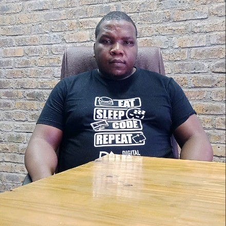

|  |
Fhatuwani Martin RaphalalaniFull Stack Software Developer🚀 |
Developed websites for small businesses and startups. Participating in real world projects and working with clients.
October 2024 - Present
Learned the fundamentals of software engineering and software lifecycle. Developed responsive and user friendly websites using html, css as well as javascript. Learned essentials of Python programming and fundamentals of Dart as well as Flutter.
May 2024 - September 2024
Developed user interfaces using Dart and Flutter. Worked on backend apis using MySQL and Postgresql. Designed websites from Figma designs and helped in the Elali project.
March 2023 - August 2023
Worked on building dynamic websites and web applications using modern web technologies such as React and Angular. I built backend apis that connect to databases such as Mongodb and Postgresql. Designed wireframes and mockups of websites using Figma. Managed task using Trello and collaborated with other developers using Github.
June 2022 - May 2023